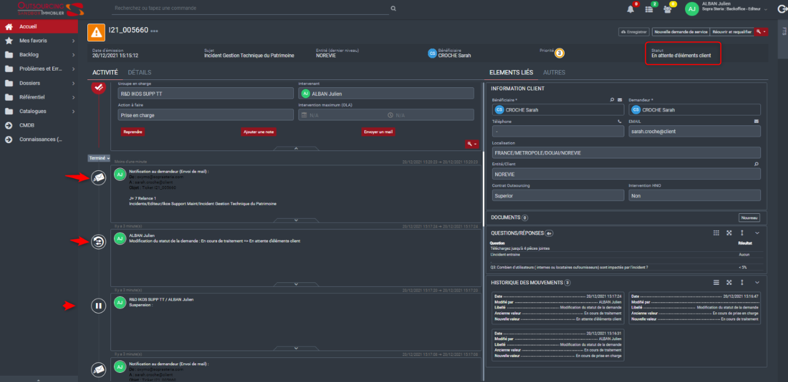

<div class="app-container fxFlexbox fxLayoutColumn fxLayoutAlignCenterCenter">
  <div><h1>Applaudimètre</h1></div>
  <div class="main-container fxFlexbox fxLayoutRow">
    <div class="img-container fxFlexbox fxLayoutAlignCenterCenter">
      
    </div>
    <div class="applause-container">
      <div class="applause-meter">
        <div class="levels" [ngClass]="{'mini': showRankFC.value && !recording && sortedRanking.length}">
          <div *ngFor="let level of decibelsLevels" class="level"
               [ngClass]="[level.color, decibelMeasure > level.minDecibel ? 'active' : '']">
          </div>
          <div class="countdown" *ngIf="recording && remainingSeconds">{{remainingSeconds}}</div>
        </div>
        <div class="ranking" *ngIf="showRankFC.value && !recording && sortedRanking.length">
          <h2>Classement</h2>
          <mat-list>
            <mat-list-item *ngFor="let rank of sortedRanking; let i = index">
              <span class="rank-text">{{rank[0]}} : {{rank[1]}}db</span>
              <button mat-mini-fab color="primary" (click)="deleteRank(i)">
                <mat-icon>clear</mat-icon>
              </button>
            </mat-list-item>
          </mat-list>
        </div>
      </div>

      <button color="primary" mat-raised-button (click)="onStartRecording()" *ngIf="!recording">Commencer l'enregistrement
      </button>
      <button color="primary" mat-raised-button (click)="onEndRecording()" *ngIf="recording">Terminer l'enregistrement
      </button>

      <div class="best-score">
        <ng-container *ngIf="averageMeasureSaved">
          <div>Meilleur score : <strong>{{maxMeasureSaved }}db</strong></div>
          <div>Score moyen : <strong>{{ averageMeasureSaved }}db</strong></div>
          <div class="team-name-form-field fxFlexbox fxLayoutRow fxLayoutGap10 fxLayoutAlignCenterCenter">
            <mat-form-field>
              <mat-label>Nom de l'équipe</mat-label>
              <input matInput type="text" [formControl]="teamNameFC"/>
            </mat-form-field>

            <div>
              <button mat-stroked-button (click)="saveRank(maxMeasureSaved, averageMeasureSaved)">Valider</button>
            </div>
          </div>
        </ng-container>
        <ng-container *ngIf="!averageMeasureSaved">
          <ng-container *ngIf="!alreadySavedMeasure && (!recording || (recording && !remainingSeconds))">Aucun score enregistré. Cliquez sur </ng-container>
          <ng-container *ngIf="!recording"><strong>Commencer l'enregistrement</strong> pour débuter la mesure du son.</ng-container>
          <ng-container *ngIf="recording && !remainingSeconds"><strong>Terminer l'enregistrement</strong> pour afficher les valeurs enregistrées.</ng-container>
        </ng-container>
      </div>

      <mat-accordion class="options">
        <mat-expansion-panel [expanded]="true" #optionsPanel>
          <mat-expansion-panel-header>
            <mat-panel-title>
              Options
            </mat-panel-title>
          </mat-expansion-panel-header>

          <div class="slider-container option">
            <label>Sensibilité</label>
            <mat-slider thumbLabel color="primary" min="0.1" max="10" step="0.1" [formControl]="sensibiltyFC"></mat-slider>
          </div>
          <div class="option">
            <mat-checkbox [disabled]="recording" [formControl]="autoEndFC">Fin automatique</mat-checkbox>
            <div class="slider-container" [ngClass]="{'disabled': !autoEndFC.value}">
              <label>Au bout de {{autoEndCountdownFC.value}} secondes</label>
              <mat-slider [disabled]="!autoEndFC.value || recording" thumbLabel color="primary" min="1" max="30" step="1" [formControl]="autoEndCountdownFC"></mat-slider>
            </div>
          </div>
          <div class="option">
            <mat-slide-toggle [formControl]="showRankFC" >Afficher le classement</mat-slide-toggle>
          </div>
          <div class="option">
            <mat-slide-toggle [formControl]="debugFC" >Mode debug</mat-slide-toggle>
          </div>
          <ng-container *ngIf="debugFC.value">
            <div class="option fxFlexbox fxLayoutColumn fxLayoutGap10 fxLayoutAlignCenterCenter">
              <mat-form-field>
                <mat-label>Nom de l'équipe</mat-label>
                <input matInput type="text" [formControl]="teamNameDebugFC"/>
              </mat-form-field>
              <mat-form-field>
                <mat-label>Score de l'équipe</mat-label>
                <input matInput type="text" [formControl]="teamScoreDebugFC"/>
              </mat-form-field>
              <div>
                <button mat-stroked-button (click)="saveRankDebug()">Valider</button>
              </div>
            </div>
          </ng-container>
        </mat-expansion-panel>
      </mat-accordion>
    </div>
  </div>
</div>
